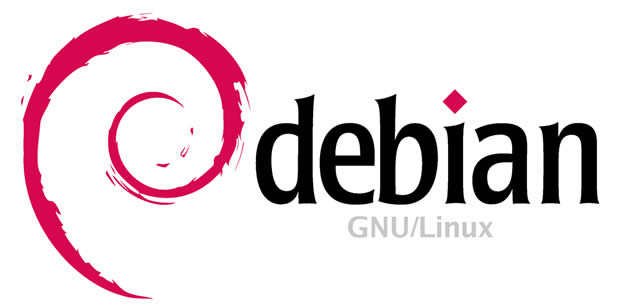
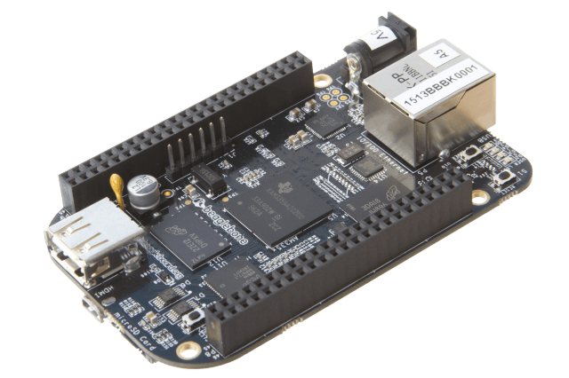
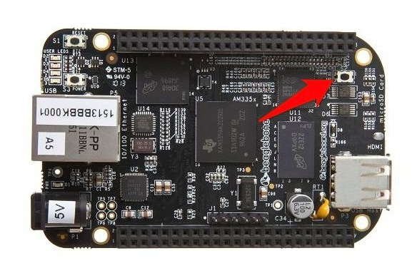

9 августа 2016
Устанавливаем ОС Debian на микрокомпьютер BeagleBoneBlack

Debian это один из самых популярных GNU/Linux дистрибутивов для компьютеров, ключевой особенностью которого есть большое количество доступных программ.
BeagleBoneBlack - это компьютер выполненный в виде платы со всем необходимым для работы. Начинка у него весьма способная:

- Процессор: 1 GHz ARM Cortex-A8
- ОЗУ: 512MB DDR3L 800MHZ
- ПЗУ: 4GB
Сегодня мы настроим BeagleBoneBlack на работу под управлением Debian.
Вам понадобятся:
- ПК под управлением Ubuntu или другого Linux-дистрибутива
- Микрокомпьютер BeagleBoneBlack
- Источник питания 5v miniUSB
- Карта microSD минимум на 2 ГБ
- Ethernet-кабель для подключения микрокомпьютера к маршрутизатору
История
Известно 2 источника ОС Debian специально подготовленной для BBB.
- Первый, авторства Robert Nelson, был спроектирован так чтобы потреблять минимум ресурсов машины и дать возможность другим программистам строить свои варианты системы. Этот дистрибутив также поддерживает другие одноплатные компьютеры.
- Второй, это вариация первого сделанная для компании CircuitCo для поставки в качестве стандартной прошивки BBB. Она заменяет устаревший образ Angstrom Linux и проектировалась легкой для использования новичком сразу "из коробки".
Наш выбор - это первый вариант, ведь чем меньше ресурсов потребляет ОС тем больше достанется нашим приложениям.
Действия
Идем
сюда, выбираем новейшую дату, например "2016-06-09",
заходим туда, и дальше надо сделать выбор:
- если нужно чтобы ОС жила на карте памяти MicroSD - то выбираем папку microsd
- если нужно чтобы ОС жила на внутренней eMMC флеш-памяти - то выбираем папку flasher
Переходим в выбранную папку.
В появившемся списке файлов, ищем тот который содержит слова flasher, debian, и заканчивается как .img.xz
Нашли?
Теперь
скачайте выбранный архив системы Debian GNU/Linux для BeagleBoneBlack.
В списке файлов также находится один с точно таким же именем но с окончанием .sha256sum, скачайте и его, он нам понадобится.
По окончании загрузки архива и файлика с хеш-кодом откройте приложение Terminal и перейдите в папку с загруженным файлом.
$ cd ~/Downloads
Давайте проверим хеш этого файла и сравним его с тем что мы записали. Выполните команду:
sha256sum -c BBB-eMMC-flasher-debian-8.5-console-armhf-2016-06-09-2gb.img.xz.sha256sum
Выдало ОК?
Если да то можно двигаться дальше. А вот если выдало
BBB-eMMC-flasher-debian-8.5-console-armhf-2016-06-09-2gb.img.xz: FAILED
sha256sum: WARNING: 1 computed checksum did NOT match
то стоит заново скачать архив и лучше через другого провайдера.
Распакуем образ из архива, на вашем ПК выполните команду:
$ unxz BBB-eMMC-flasher-debian-8.5-console-armhf-2016-06-09-2gb.img.xz
Должен получиться файлик BBB-eMMC-flasher-debian-8.5-console-armhf-2016-06-09-2gb.img размером 1.8 ГБ.
Запись на MicroSD
Есть два пути как записать образ на карту памяти: простой, используя
программу или путь гуру, вам выбирать как ;)
Следуя пути гуру, выполните:
$ df -h
Вы увидите список всех смонтированных файловых систем на вашем ПК.
Теперь, вставьте карту памяти MicroSD в ваш ноутбук.
Надо узнать имя которое система назначила этой карте памяти.
Снова выполните команду
$ df -h
Видите разницу? В списке появилась файловая система карты памяти. Если не появилась - отформатируйте карту памяти на другом ПК и создайте на ней один раздел, а затем снова вставьте в свой ноутбук.
В нашем случае карта памяти выглядела вот так
Filesystem Size Used Avail Use% Mounted on
/dev/mmcblk0p1 2G 2.6M 1.99G 1% /media/username/SD
Только вот mmcblk0p1 это имя раздела, а нам нужно узнать имя самого устройства. Выполним:
$ dmesg | tail
Ищем строки похожие на информацию о вставленной карте памяти:
[ 671.315322] mmc0: new ultra high speed SDR50 SDHC card at address 59b4
[ 671.315489] mmcblk0: mmc0:59b4 SD 2 GiB
[ 671.316978] mmcblk0: p1
Отсюда видно что имя устройства - mmcblk0.
Скоро нам понадобится крошечная утилита pv, установите ее:
$ sudo apt-get update
$ sudo apt-get install pv
Итак карта памяти вставлена, имя карты в системе известно, архив с образом распакован.
Выполните отмонтирование карточки:
$ sudo umount /dev/mmcblk0p1
Теперь можно записать образ с Debian на карту памяти:
$ sudo dd bs=512k if=BBB-eMMC-flasher-debian-8.5-console-armhf-2016-06-09-2gb.img | pv | sudo dd of=/dev/mmcblk0
Начнется копирование образа .img на карту памяти, а благодаря утилите pv вы видите сколько уже скопировано и вообще идет ли процесс.
Когда процесс записи будет завершен, можно вынуть карту и вставить ее в BeagleBoneBlack.
Инсталляция в eMMC
Во многих руководствах сказано что нужно нажать и удерживать кнопку S2 и одновременно подать питание - это якобы запустит процесс загрузки с MicroSD.

У нас официальный экземпляр от
element14, но у него для загрузки с карты зажимать кнопку S2
НЕ НУЖНО.
Итак:
- вставляем карту MicroSD в BBB, а питание подаем через miniUSB кабель от ноутбука;
- ждем;
- загорятся все четыре светодиода "user LEDs" одновременно;
- грузится;
- начнет бегать огонек на 4 светодиодах согласно шаблону cylon sweep;
- ждем;
- загорятся все 4 светодиода одновременно;
- через секунды BBB сам уйдет в режим "питание отключено";
- отключаем питание;
- вынимаем MicroSD.
Поздравляем, ваш BeagleBoneBlack прошит!
Первый старт
Подключите микрокомпьютер к маршрутизатору, подайте питание.
BBB начнет загрузку Debian со встроенной флеш-памяти eMMC.
Через некоторое время маршрутизатор ему назначит IP адрес используя протокол DHCP.
Как узнать какой IP адрес теперь у BeagleBoneBlack?
Воспользуемся утилитой Zenmap, выполните:
$ sudo apt-get install zenmap
Запустим на ноутбуке zenmap и просканируем сеть. Настройте его как указано:
Target: 192.168.1.1-254 (диапазон адресов локальной сети в которую подключен микрокомпьютер)
Profile: Ping scan
Жмите кнопку Scan.
Через некоторое время в списке слева виден хост с именем
arm. Это и есть наш товарищ. Запишите его IP адрес.
Выполним подключение:
$ ssh debian@192.168.1.59
Вводим пароль "temppwd". Если строка приглашения изменилась на
debian@arm:~#
Тогда вы успешно зашли на BeagleBoneBlack.
Проверить что вы установили правильный образ Debian можно выполнив:
$ sudo cat /etc/dogtag
[sudo] password for debian:
rcn-ee.net console Debian Image 2016-06-09
Выдаст что у вас образ от rcn-ee.net датированный 9 июня 2016, как раз так и должно быть.
НАСТРОЙКА Debian Jessie
Ваше 1ое действие это СМЕНИТЬ ПАРОЛЬ. Выполните:
$ passwd
Введите новый пароль дважды и нажмите Enter.
По-умолчанию в образах Debian от rcn-ee сделано так:
Вход пользователя root разрешен, но пароль для него задан пустой, "root login allowed but password is blank", что делает вход суперпользователя через пароль невозможным. Лучше такое поведение изменить и задать пароль для root и в то же время заблокировать учетку суперпользователя:
$ sudo su
# passwd --lock root
# passwd
# passwd -S
root L 06/09/2016
буква L означает что вы не сможете входить как root напрямую или использовать команду su чтобы переключиться на пользователя root.
Больше знаний о суперпользователе.
Отредактируйте настройки демона SSH и установите такие значения:
$ sudo nano /etc/ssh/sshd_config
PermitRootLogin no
PermitEmptyPasswords no
Выполните обновление списка доступных приложений:
$ sudo apt-get update & apt-get upgrade
Смените имя микрокомпьютера в сети:
$ sudo nano /etc/hostname
Вместо arm введите что-нибудь более понятное, например beaglebone.
Отключите из автозапуска службу Avahi, она редко когда нужна:
$ systemctl list-units | grep avahi
avahi-daemon.service loaded active running Avahi mDNS/DNS-SD
avahi-daemon.socket loaded active running Avahi mDNS/DNS-SD
$ sudo systemctl disable avahi-daemon
НАСТРОЙКА Debian Wheezy
Сделайте все шаги из настроек Jessie кроме ситуаций описанных ниже.
Откройте источники репозиториев:
# nano /etc/apt/sources.list
Стрелками перейдите к строке
deb [arch=armhf] http://debian.beagleboard.org/packages wheezy-bbb main
И поставьте символ # в ее начале (что приведет к ее отключению).
Нажмите сохранить Ctrl+O и выйти Ctrl+X.
Выполните обновление доступных приложений:
# apt-get update
Если сборка Debian запылилась, то выдаст ошибки вида:
W: There is no public key available for the following key IDs:
Для исправления этой неприятности следует получить новые ключи разработчиков:
# aptitude -y install debian-archive-keyring debian-keyring
Снова сделайте обновление списка доступных к установке и установленных пакетов:
# apt-get update & apt-get upgrade -y
P.S. О Debian много полезного можно найти по ссылкам:
Настройки и нюансы
Установка
Автор
© Dmytro Nikandrov